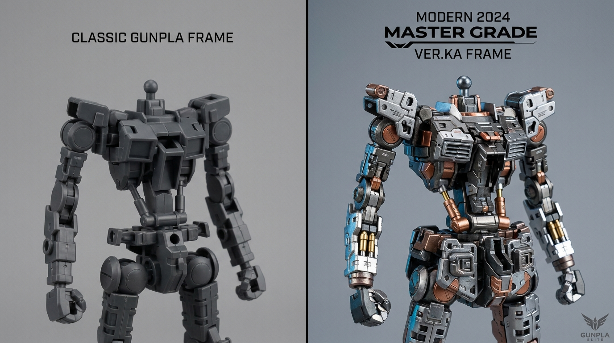

Pendahuluan
Sejak pertama kali diperkenalkan pada tahun 2010, lini Master Grade telah menjadi tulang punggung bagi para builder yang menginginkan keseimbangan antara detail dan ukuran yang manageable. Dengan skala 1/100, MG memberikan cukup surface area untuk pencatataan yang detail sambil tetap bisa dipamerkan di rak koleksi.
Perbandingan struktur inner frame MG klasik (kiri) vs MG Modern Ver.Ka (kanan)
Revolusi Inner Frame
Inner frame pada MG modern telah berevolusi dari sistem skeleton sederhana menjadi struktur mecha yang komprehensif. Berbeda dengan generasi lama yang mengandalkan snap-fit antar piece plastik, inner frame baru menggunakan sistem ball-joint dan hinge mechanism yang terintegrasi penuh.
Artikulasi & Poseability
Salah satu pencapaian terbesar dari inner frame generasi baru adalah peningkatan range of motion tanpa meningkatkan jumlah piece secara signifikan:
- Sendi Bahu: Sistem dual-ball joint memungkinkan rotasi 360 derajat
- Pinggang: Rotator waist baru memberikan kebebasan gerakan torso
- Lutut: Hinge mechanism dengan multi-axis steering
- Tangan: Finger joints yang diupgrade untuk grip yang stabil
Tips Building & Customization
TIPS PRO:
Selalu gunakan side cutter berkualitas tinggi saat memisahkan piece dari runner. Inner frame yang kompleks membutuhkan presisi di setiap sambungan.

Proses assembly inner frame step-by-step
Kesimpulan
Evolusi inner frame Master Grade di tahun 2024 bukan hanya tentang spesifikasi yang lebih tinggi — ini tentang memberikan builder lebih banyak kemungkinan kreatif dalam paket yang tetap enjoyable untuk dirakit.